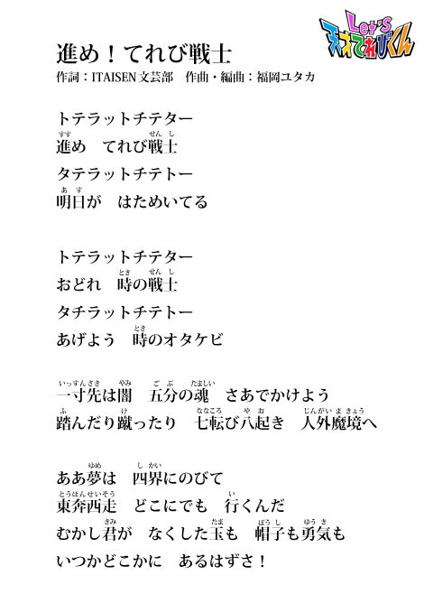
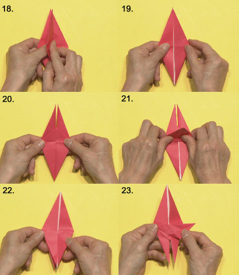

2016年10月24日 (月)「キスミーきれいみー」MVに超次元帝国清掃課地球係が登場！［超次元帝国清掃課地球係］
地球人のみなさ～ん。
超次元帝国のスーパーアイドル・ぱぺらぴ子ちゃんの
「 キスミーきれいみー 」のミュージック・ビデオに、
わたくしたち超次元帝国清掃課地球係の３人が登場よ！
ミュージック・ビデオは下記のサイトで見ることができるわよ！
キュートなダンスをご覧あれ。オーホホホホホホ～！
■NHKどーがステーション
http://www3.nhk.or.jp/d-station/episode/tvkun/6389/
■YouTube
https://youtu.be/loYkPeiJCvQ
※ＮＨＫサイトを離れます
■ニコニコ動画
http://www.nicovideo.jp/watch/1477023785
※ＮＨＫサイトを離れます
そうそう、今回もしばらくしたらGYAOでも見られるようになる予定よ～。
超次元帝国清掃課地球係 係長 松永天馬より
投稿者:超次元帝国清掃課地球係 | 投稿時間:19時00分 | 固定リンク
2016年10月10日 (月)「キスミーきれいみー」のミュージック・ビデオをお楽しみなさい！［超次元帝国清掃課地球係］
超次元帝国のスーパーアイドル・ぱぺらぴ子ちゃんが歌う「キスミーきれいみー」。
そのミュージック・ビデオを大大大大大公開！
地球人のみなさん、愛らしい歌声とキュートな姿を今すぐチェックするのよ～！

ちなみに「Let’s天才てれびくん」の番組ホームページ以外でも見ることができるわよ！
オーホホホホホホ～！
■NHKどーがステーション
http://www3.nhk.or.jp/d-station/episode/tvkun/6233/
■YouTube
https://youtu.be/RYuEemuRTC8
※ＮＨＫサイトを離れます
■ニコニコ動画
http://www.nicovideo.jp/watch/1475659806
※ＮＨＫサイトを離れます
そうそう、しばらくしたらGYAOでも見られるようになる予定よ～。
超次元帝国清掃課地球係 係長 松永天馬より
投稿者:超次元帝国清掃課地球係 | 投稿時間:18時45分 | 固定リンク
2016年09月13日 (火)エンディングテーマ「たりないドアー」の動画が！［ITAISEN職員］
「 Let's天才てれびくん 」2016年度のエンディングテーマ「 たりないドアー 」の動画が
下記のサイトで見られるようになりました。
■NHKどーがステーション
http://www3.nhk.or.jp/d-station/episode/tvkun/6230/
■YouTube
https://youtu.be/Dir8h4igeDY
※ＮＨＫサイトを離れます
■ニコニコ動画
http://www.nicovideo.jp/watch/so29614162
※ＮＨＫサイトを離れます
※今後「 GYAO 」でも見られるようになる予定です。
現在、番組では「 たりないドアー 」のダンス動画を大募集中！
（ しめきりは2017年１月下旬の予定 ）
動画を見て練習して・・・
ホットなダンスを撮影して・・・
番組ホームページから投稿しよう！
Let's たりないドアー！！
投稿者:ITAISEN職員 | 投稿時間:18時45分 | 固定リンク
2015年12月17日 (木)挿入歌「進め！てれび戦士」の歌詞［ITAISEN職員］
我らが国立異次元獣対策センター（ 略してITAISEN ）の文芸部が作詞し、
てれび戦士たちが歌う「 進め！てれび戦士 」という挿入歌（ そうにゅうか ）が、
秋から新しく登場した。
茶の間戦士諸君にも歌ってみてほしいので、
特別に一番の歌詞を公開しよう。
まだ放送では出てきていない部分があるかもしれないぞ。

投稿者:ITAISEN職員 | 投稿時間:18時55分 | 固定リンク
2015年10月06日 (火)「水飲み鳥」のおりかた［ITAISEN職員］
きょうの放送で紹介した、「水飲み鳥」のおりかたをみんなに教えよう。
かんたんなので、ぜひチャレンジしてくれ。
 ０、 おりがみを用意！
０、 おりがみを用意！
１、 ふたつにおる
２、 ひらいてうらがえす
３、 またふたつにおる
４、 まんなかの線にあわせて、図のようにおる
５、 うらがえして、４と同じようにおる

６、 まんなかから開いておりたたむ
７、 開いている方を下にして・・・
８、 左右をこんなふうにおる
９、 うらがえして、８と同じようにおる
１０、 上の部分をおる
１１、 うらがえすとこんなかんじ
 １２、 左右にひらいて・・・
１２、 左右にひらいて・・・
１３、 上にひらきながら左右をたたみ・・・
１４、 ひしがたにする
１５、 うらがえして、まんなかの三角形の部分を上におりかえす
１６、 １２・１３のやりかたでひしがたに
１７、 こんなかたちになったかな？
１８、 右から左に一枚めくってから・・・
１９、 うらがえす
２０、 また、右から左に一枚めくるとこんなかたちに
２１、 下から上に一枚めくって、
２２、 上下さかさまにするとこうなる
２３、 鳥の首の部分をつくるぞ！まず、おり目をつけて・・・

２４、 いったんもどして、また、おり目をつける
２５、 ２３、２４のおり目を確認して・・・
２６、 首を立てる
２７、 左右をおりたたんだら・・・
２８、 顔をつくって・・・
２９、 できあがり！
投稿者:ITAISEN職員 | 投稿時間:18時30分 | 固定リンク
2015年03月20日 (金)「どちゃもんDEキャラ弁」レシピ大公開！
広島どちゃもん・ぷうかと福岡どちゃもん・ちゃっちゃくちゃらから、どちゃもんキャラ弁のレシピが届きました。
ぷうか＞茶の間戦士のみんな、ひさしぶりじゃねー。
ちゃっちゃくちゃら＞「どちゃもんDEキャラ弁」見てくれたと？ばりおいしそーやろ。
ぷうか＞作り方を特別に教えちゃるけえ、作ってみんさいや。
●ぷうかキャラ弁
（※レシピはどちゃもん本体のみ。まわりのおかずは含まれません）

＜材料＞
じゃがいも（中）1個、パプリカ1/4個、にんじん1/4本、薄焼き卵1枚、マヨネーズ大さじ2、かに風味かまぼこ1本、ブロッコリー適量、スライスチーズ適量、のり適量、ハム適量、塩、コショウ
＜作り方＞
【土台】 じゃがいもをゆで、熱いうちに皮をむいてつぶす。粗熱が取れたら、マヨネーズ・塩・こしょうとあえてポテトサラダを作る。
【頭・足・しっぽ】 パプリカの種を除き、ぺティーナイフで顔・足・しっぽの形にカットする。
【目】 スライスチーズを白目の形にカットする。
【眉毛・黒目】 のりをハサミで眉毛と黒目の形にカットする。
【くちびる】 ハムをくちびるの形にカットする。
【ひれ】 にんじんを薄く切り、ひれの形にカットしてゆでる。
【着物】 ブロッコリーの先端を包丁で切る。かに風味かまぼこを細く裂く。のりをハサミで細長く切る。スライスチーズを細長く切る。
ポテトサラダをラップで包んで形を整え、ぷうかの土台を作り、ラップをはずして弁当箱に入れる。
その上に、薄焼き卵、チーズ、のり、ブロッコリー、かに風味かまぼこの順にのせて着物を作る。
パプリカで作ったひれと頭を順にのせ、その上にのり・チーズ・ハムを置いて顔を作り、かに風味かまぼこのヒゲをつける。
パプリカで作った足としっぽをつけて完成！
●ちゃっちゃくちゃらキャラ弁
（※レシピはどちゃもん本体のみ。まわりのおかずは含まれません）

＜材料＞
ごはん120g、梅干し（中）2粒、スティックチーズ1本、ハム1/4枚、のり1/6枚、スライスチーズ1/8枚、かに風味かまぼこ適量、薄焼き卵適量、にんじん適量
＜作り方＞
【土台・頭の梅の花】 梅干しの種を除き、1粒は粗みじん切り、もう1粒は花びらのような丸形4枚にカットする。
【髪・顔・帯】 のりをハサミで、髪・顔・帯の形にカットする。
【しめ縄】 スティックチーズを、ペティーナイフを使って、しめ縄のように形作る。
【手・めしべ】 スライスチーズを、つまようじを使って、手と、頭の梅の花のめしべの形に切る。
【ほっぺ】 ハムを、ストローで2枚くりぬく。
【着物のえり】 ハムを、幅5㎜長さ2㎝の短冊形2枚に切る。かに風味かまごこを細くさく。
ごはん40gをラップで包み、楕円形に握る。
残りのごはんに、粗みじん切りの梅干しを混ぜ合わせ、ラップに包み着物の形を作る。
ラップをはずし、梅ごはんが胴体、楕円形のご飯が頭になるよう、弁当箱に入れる。
それぞれのパーツをごはんにのせる。
薄焼き卵をストローで丸くくりぬき、その上に小さな長方形に切ったにんじんをのせ、のりとチーズで目をつけて頭の梅の花の横にのせる。
チーズと梅を使って、帯の模様をつけて完成！
ぷうか＞うちの体はポテトサラダで作っとったんじゃね。
ちゃっちゃくちゃら＞うちは梅の好いとーから、梅ご飯で作っちもらえてなんやかうれしか〜。
ぷうか＞どうじゃろ、わりかしみやすいじゃろ？
ちゃっちゃくちゃら＞他のどちゃもんのも考えちみるんも楽しかね。
ぷうか・ちゃっちゃくちゃら＞Let’sどちゃもんDEキャラ弁！
投稿者:未来人L | 投稿時間:18時40分 | 固定リンク